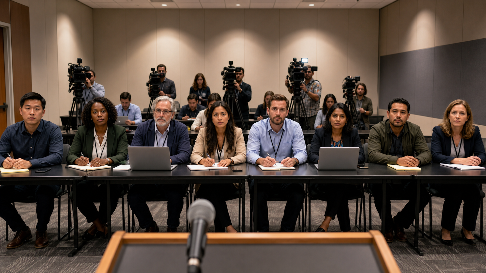

No reporter selected
Click a reporter to begin.
The room is restless. Several hands are up. Choose a reporter to receive a question.
Risk Communication Drill / Case 2
You are the Prairie Lantern County Health Director. Select a reporter, answer under pressure, then get a CERC-style score focused on MDR-TB, community trust, privacy, screening, and follow-up.

The room is restless. Several hands are up. Choose a reporter to receive a question.
AI Coach
The local coach evaluates CERC habits plus message discipline: empathy, accuracy, transparency, action guidance, respect, question relevance, and whether you stay within 3 key messages with up to 3 supporting details each.
AI Coach Score